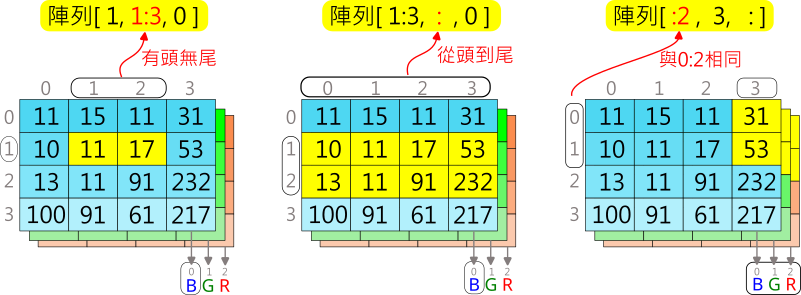
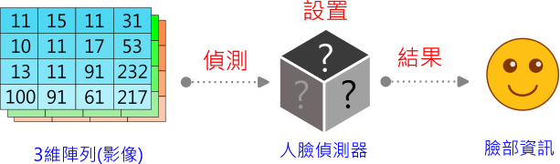

📚 人臉偵測與臉部特徵
- 腦筋急轉彎，看看下面的照片，你看到了什麼？
- (資料來源:1)
- 這種心理現象一般稱為空想性錯視(pareidolia)。
- 那什麼是空想性錯視呢？我們可以透過下方影片來瞭解：
- (1分37秒, 資料來源:2)
- 空想性錯視是人類大腦與生俱來的功能，讓我們能認出人臉。你知道嗎？電腦在相關軟硬體的搭配下，也可以看出人臉呢！在這個課程中，讓我們一起來探索人臉偵測的資訊科技，及其相關應用。
關於視覺影像
- 本課程使用到整合後的教學函式庫，如下連結。
- Py4t 視覺影像 說明、範例程式
📙 電腦視界(1)
- 在此，我們要來了解，當電腦在觀看週遭環境時，它到底看到了什麼？
- 首先，電腦以視訊攝影機做為眼睛，透過攝影機中的感光電子元件，將拍攝到的影像轉換成由0與1組成的數位訊號，後續可以讓它做各種運算處理並顯示在螢幕上。
-

-
由上圖中可以得知，影像在電腦的記憶體中，會以陣列的資料結構存放，那什麼是陣列呢？
-
陣列(Array)是一種資料結構，是由相同資料類型(整數、字串或浮點數等)元素所組成。
-
常見的陣列種類可分成1、2、3維陣列，讓大量資料的排列方式更多元，在生活中都有實際的應用情形。
-

-

-

-
(資料來源:3)
-
如果我們想要對影像做分析或處理，就必須要處理影像的3維陣列，利用索引的方式可以讓我們指定陣列的某一部分，在本課程中會使用numpy函式庫的多維陣列，其索引語法如下：
- 如果一次只能索引一個點的話，當我們想要一次存取一塊陣列，在程式撰寫時會變得更複雜。numpy函式庫提供切片(slicing)的語法，讓我們可以很方便的索引到一塊陣列。
- 
接著讓我們來實作看看。
範例程式 電腦視界 - - - - - - - (電腦視界 1/1 新檔)
【長度6:20 章節時間如下】
- 0:00 存檔、切換便利貼
- 1:00 設置攝影機
- 1:36 攝影機單張畫面
- 2:15 觀察陣列
- 3:43 攝影機連續畫面
- 4:35 鏡像-左右翻轉
- 5:06 修改攝影機畫面

📗 看見人臉(1)
- 想要讓電腦認出人臉，我們可以透過人臉偵測器來達成。
- 首先，設置人臉偵測器，之後將代表影像的3維陣列做為偵測器的輸入，從結果中，我們就可以得到人臉的資訊。
-

-
人臉偵測器感覺起來很像神秘的黑盒子，它的內部到底是什麼呢？
-
這個偵測器，其實是由全球資料科學家所研究的機器學習(Machine Learning)的結果之一，特別是這幾年快速發展的深度學習(Deep Learning)，由於這個主題相當的龐大與複雜，我們僅會透過下方的影片(手寫數字辨識)，做為對深度學習的基本認識。
-
(2分36秒,有中文字幕,資料來源:4)
-
資料科學家從人類的神經元及神經系統得到靈感，建構出以數學及電腦程式組成的人工神經網路。
-

-
(資料來源:5)
-
人臉偵測器，是由深度學習方式所訓練出來的人工神經網路。其最簡單的型式是多層感知器，由每一層中的神經元，互相關連，組成複雜的神經網路來做出如同人類能力的各項辨識。
-
接著讓我們來實作看看。
範例程式 看見人臉 - - - - - - - (看見人臉 1/1 新檔)
【長度5:46 章節時間如下】
- 0:00 存檔、切換便利貼
- 0:41 設置攝影機、人臉偵測器
- 1:22 擷取影像迴圈
- 2:32 偵測、標示人臉
- 4:10 標示信心值

📘 臉部網格(2)
更多臉部特徵
- 在電腦科學中，臉部特徵(face landmark)是指臉部一組組容易尋找的點，眼睛、鼻子、嘴脣等。臉部特徵會有給定的編號。

- (資料來源:6)
-
有了臉部特徵之後，將不同組的特徵點連結起來，可以得到臉部網格或是臉部輪廓等效果。
-
一起來動手實作。
範例程式 更多臉部特徵 - - - - - - - (臉部網格 1/2 新檔)
【長度5:38 章節時間如下】
- 0:00 存檔、切換便利貼
- 0:39 更多臉部特徵
- 0:50 設置攝影機、臉部網格偵測器
- 1:35 擷取影像迴圈
- 2:33 偵測臉部特徵點
- 3:35 標示臉部網格、特徵點與輪廓
臉部動作
範例程式 臉部動作 - - - - - - - (臉部網格 2/2 接續)
【長度4:13 章節時間如下】
- 5:43 臉部動作
- 6:25 計算開口長度
- 8:07 符合開口條件的動作

進階範例 人臉輸入數字
- 人臉數字輸入，眨右眼增加數字，眨左眼減少數字，開口輸入數字
- 進階範例 人臉輸入數字
📗 濾鏡貼紙(2)
特徵點與png去背圖
範例程式 特徵點與png去背圖 - - - - - - - (濾鏡貼紙 1/2 新檔)
【長度 章節時間如下】
- 0:00 存檔、切換便利貼
- 0:51 攝影機程式
- 2:24 png去背圖
- 4:37 取得特徵點
- 6:26 png貼至特徵點
兩點轉換
範例程式 兩點轉換 - - - - - - - (濾鏡貼紙 2/2 接續)
【長度 章節時間如下】
- 8:33 兩點轉換

📘 AR面具(1)
範例程式 AR面具 - - - - - - - (AR面具 1/1 新檔)
【長度 章節時間如下】
- 0:00 存檔、切換便利貼
- 0:39 攝影機程式
- 2:15 臉部偵測
- 4:08 載入面具資料
- 6:18 面具轉換

📙 科技社會議題
- (7分31秒, 資料來源:7)